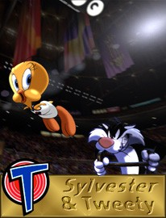

© 1996 Warner Bros.
© 1996 Warner Bros.

Tweety & SylvesterIt was in a Merrie Melodie called Tweetie Pie, directed by Friz Freleng and released in 1947, that this endearing and enduring pair was first teamed, demonstrating that their cat-and-bird game was irresistible to audiences, bringing home the first of the Warner cartoonists' Academy Awards, and kicking off a series that would run until the studio closed, and then beyond. In 42 animated adventures (all but one directed by Freleng) this baby-talking bird who just bordered on the precious proved that he was not above using pins, needles, tacks, darts, saws, shovels, mallets, anvils, anchors, barbed wire, chemicals, roller skates, bowling balls, baseball bats, seltzer bottles, boxing gloves, vicious dogs, lions, Bengal tigers, sharks, firearms, blowtorches, dynamite, skyrockets, or cannons, if the need arose, to ward off the threatening "puddy tat."
Tweety and Sylvester were separate comedians who found they created a unique kind of spontaneous combustion when they called themselves a team. Tweety, in fact, was created to star opposite an Abbott & Costello caricature: a pair of mangy parody cats named "Babbit & Catstello," in Bob Clampett's A Tale of Two Kitties in 1942. In this first cartoon, he greets the discovery of his unsuspecting predators with the line that would become his trademark: "I tawt I taw a puddy tat!"
Sylvester's birth occurred three years later in a Freleng cartoon entitled Life with Feathers. "I designed Sylvester to look subtly like a clown," Freleng later explained. "I gave him a big red nose and a very low crotch, which was supposed to look like he was wearing baggy pants. But gradually he was changed, because the construction restricted his animation."
As a team, Sylvester and Tweety found their origins in the Bugs Bunny mystique that held the studio in its grip: the constant search for more characters to act out the eternal tug-of-war between the Innocent in implicit (and complicit) harmony with the Universe At Large, and the Adversary who just can't get the hang of it. Like Bugs and the Road Runner, Tweety could do no wrong; like Yosemite Sam and Wile E. Coyote, Sylvester could do no right. Between the two of them, they cleaned up.
© 1996 Warner Bros.